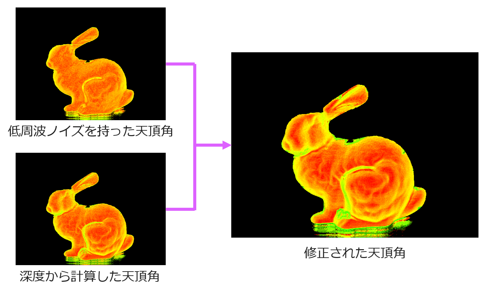

法線の誤差解消偏光解析によって求めた法線の誤差を深度を用いて解消する
 方位角の曖昧性解消
方位角の曖昧性解消

天頂角の低周波ノイズ解消
方位角の曖昧性の解消
偏光解析によって得られた方位角には $180^\circ$ の曖昧性が残っている．
これを深度を用いて以下の式によって解消する．
\[
\begin{eqnarray}
\varphi = \begin{cases}
\varphi_{pol} + 180^\circ & (90^\circ < |\varphi_{pol} - \widehat{\varphi}_{dep}| \leq 270^\circ) \\
\varphi_{pol} & (otherwise)
\end{cases}
\label{fixphi}
\end{eqnarray}
\]
ここで，$\varphi_{pol}$は偏光から求めた方位角であり，$\widehat{\varphi}_{dep}$は平滑化した深度から求めた方位角である．
天頂角の低周波ノイズの解消
偏光解析によって得られた天頂角は屈折率が正確でないため，低周波ノイズが生じており形状が歪んでいる．
これを深度から求めた天頂角の低周波成分を用いて以下の式によって天頂角を修正する.
\[
\begin{eqnarray}
\vartheta = \vartheta_{pol} + \widehat{\vartheta}_{dep} - \widehat{\vartheta}_{pol}
\label{fixtheta}
\end{eqnarray}
\]
ここで，$\vartheta_{pol}$，$\widehat{\vartheta}_{pol}$は偏光から求めた天頂角とそれを平滑化したものであり，$\widehat{\vartheta}_{dep}$は平滑化した深度から求めた天頂角である．
偏光度が小さい場合のノイズの解消
偏光度$\rho$が小さい場合，つまり天頂角が0に近い場合に，偏光解析の値が不安定になり法線にノイズが発生する．
そのため，偏光度$\rho$の値によって以下の式で法線を修正する．
\[
\begin{eqnarray}
\boldsymbol{N} = \begin{cases}
\widehat{\boldsymbol{N}}_{dep} & (\rho < \tau) \\
\boldsymbol{N}_{pol} & (otherwise)
\end{cases}
\label{fixnormal}
\end{eqnarray}
\]
ここで，$\widehat{\boldsymbol{N}}_{dep}$は平滑化した深度から得られた法線であり，$\boldsymbol{N}_{pol}$は偏光解析によって得られる法線である．
$\tau$は閾値であり，本稿では $\tau = 0.01$とした．